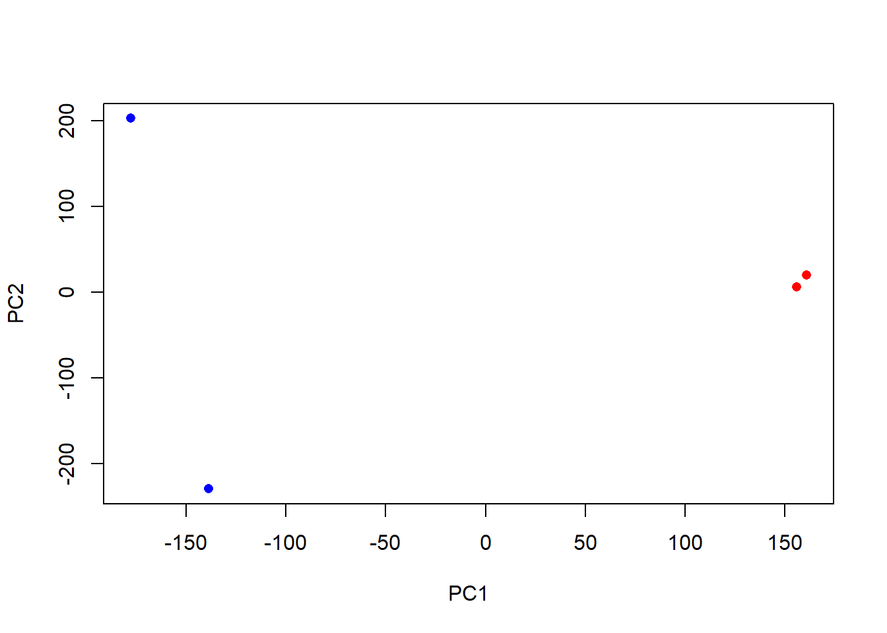
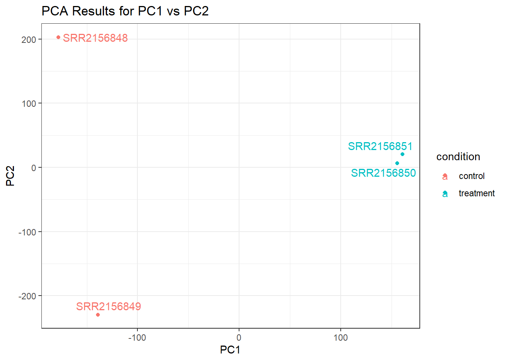
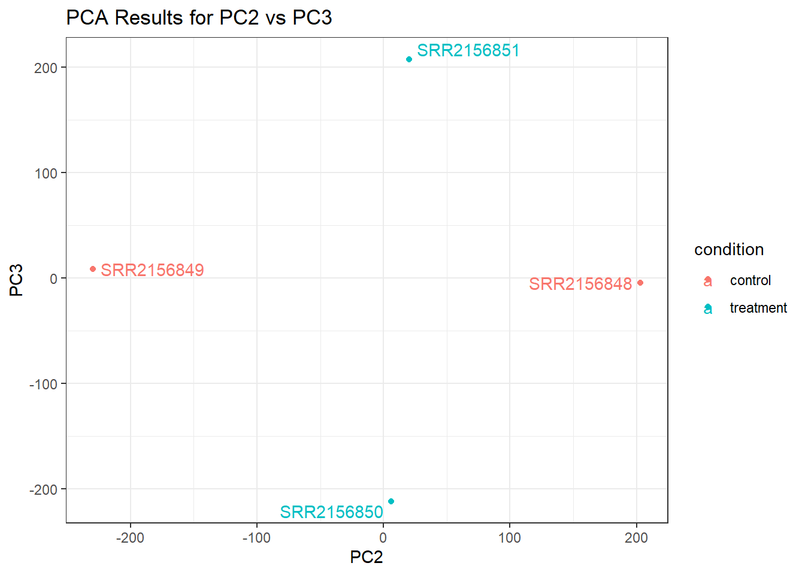
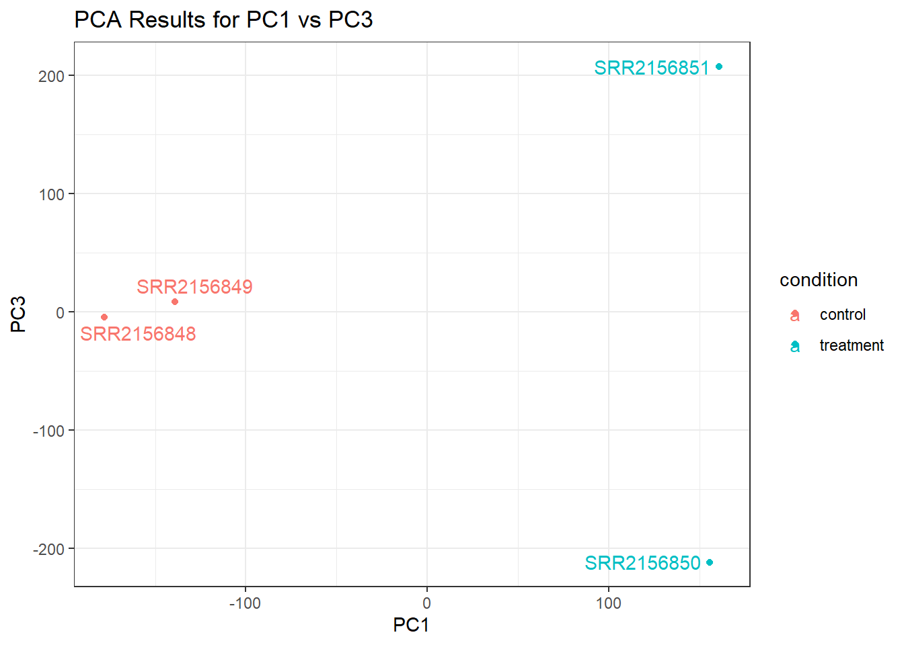

library(tximport)Warning: package 'tximport' was built under R version 4.1.1library(tximport)Warning: package 'tximport' was built under R version 4.1.1# setup the folder and filenames to read
folders <- dir(pattern="SRR21568*")
samples <- sub("_quant", "", folders)
files <- file.path( folders, "abundance.h5" )
names(files) <- samplestxi.kallisto <- tximport(files, type = "kallisto", txOut = TRUE)1 2 3 4 head(txi.kallisto$counts) SRR2156848 SRR2156849 SRR2156850 SRR2156851
ENST00000539570 0 0 0.00000 0
ENST00000576455 0 0 2.62037 0
ENST00000510508 0 0 0.00000 0
ENST00000474471 0 1 1.00000 0
ENST00000381700 0 0 0.00000 0
ENST00000445946 0 0 0.00000 0colSums(txi.kallisto$counts)SRR2156848 SRR2156849 SRR2156850 SRR2156851
2563611 2600800 2372309 2111474 sum(rowSums(txi.kallisto$counts)>0)[1] 94561Keep rows with counts over 0
to.keep <- rowSums(txi.kallisto$counts) > 0
kset.nonzero <- txi.kallisto$counts[to.keep,]keep2 <- apply(kset.nonzero,1,sd)>0
x <- kset.nonzero[keep2,]PCA (don’t forget to transpose!)
pca <- prcomp(t(x), scale=TRUE)
summary(pca)Importance of components:
PC1 PC2 PC3 PC4
Standard deviation 183.6379 177.3605 171.3020 1e+00
Proportion of Variance 0.3568 0.3328 0.3104 1e-05
Cumulative Proportion 0.3568 0.6895 1.0000 1e+00plot(pca$x[,1], pca$x[,2],
col=c("blue","blue","red","red"),
xlab="PC1", ylab="PC2", pch=16)
GGplot code
library(ggplot2)
library(ggrepel)Warning: package 'ggrepel' was built under R version 4.1.1colData <- data.frame(condition = factor(rep(c("control", "treatment"), each = 2)))
rownames(colData) <- colnames(txi.kallisto$counts)
pca_results <- as.data.frame(pca$x)
pca_results$condition <- as.factor(colData$condition)
ggplot(data = pca_results) +
aes(x = PC1, y = PC2, group = condition, color = condition) +
geom_point() +
geom_text_repel(label = rownames(pca_results)) +
labs(title = "PCA Results for PC1 vs PC2") +
theme_bw()
PC2 vs PC3
ggplot(data = pca_results) +
aes(x = PC2, y = PC3, group = condition, color = condition) +
geom_point() +
geom_text_repel(label = rownames(pca_results)) +
labs(title = "PCA Results for PC2 vs PC3") +
theme_bw()
PC1 vs PC3
ggplot(data = pca_results) +
aes(x = PC1, y = PC3, group = condition, color = condition) +
geom_point() +
geom_text_repel(label = rownames(pca_results)) +
labs(title = "PCA Results for PC1 vs PC3") +
theme_bw()
library(DESeq2)Loading required package: S4VectorsLoading required package: stats4Loading required package: BiocGenerics
Attaching package: 'BiocGenerics'The following objects are masked from 'package:stats':
IQR, mad, sd, var, xtabsThe following objects are masked from 'package:base':
anyDuplicated, append, as.data.frame, basename, cbind, colnames,
dirname, do.call, duplicated, eval, evalq, Filter, Find, get, grep,
grepl, intersect, is.unsorted, lapply, Map, mapply, match, mget,
order, paste, pmax, pmax.int, pmin, pmin.int, Position, rank,
rbind, Reduce, rownames, sapply, setdiff, sort, table, tapply,
union, unique, unsplit, which.max, which.min
Attaching package: 'S4Vectors'The following objects are masked from 'package:base':
expand.grid, I, unnameLoading required package: IRanges
Attaching package: 'IRanges'The following object is masked from 'package:grDevices':
windowsLoading required package: GenomicRangesLoading required package: GenomeInfoDbLoading required package: SummarizedExperimentLoading required package: MatrixGenericsLoading required package: matrixStats
Attaching package: 'MatrixGenerics'The following objects are masked from 'package:matrixStats':
colAlls, colAnyNAs, colAnys, colAvgsPerRowSet, colCollapse,
colCounts, colCummaxs, colCummins, colCumprods, colCumsums,
colDiffs, colIQRDiffs, colIQRs, colLogSumExps, colMadDiffs,
colMads, colMaxs, colMeans2, colMedians, colMins, colOrderStats,
colProds, colQuantiles, colRanges, colRanks, colSdDiffs, colSds,
colSums2, colTabulates, colVarDiffs, colVars, colWeightedMads,
colWeightedMeans, colWeightedMedians, colWeightedSds,
colWeightedVars, rowAlls, rowAnyNAs, rowAnys, rowAvgsPerColSet,
rowCollapse, rowCounts, rowCummaxs, rowCummins, rowCumprods,
rowCumsums, rowDiffs, rowIQRDiffs, rowIQRs, rowLogSumExps,
rowMadDiffs, rowMads, rowMaxs, rowMeans2, rowMedians, rowMins,
rowOrderStats, rowProds, rowQuantiles, rowRanges, rowRanks,
rowSdDiffs, rowSds, rowSums2, rowTabulates, rowVarDiffs, rowVars,
rowWeightedMads, rowWeightedMeans, rowWeightedMedians,
rowWeightedSds, rowWeightedVarsLoading required package: BiobaseWelcome to Bioconductor
Vignettes contain introductory material; view with
'browseVignettes()'. To cite Bioconductor, see
'citation("Biobase")', and for packages 'citation("pkgname")'.
Attaching package: 'Biobase'The following object is masked from 'package:MatrixGenerics':
rowMediansThe following objects are masked from 'package:matrixStats':
anyMissing, rowMedianssampleTable <- data.frame(condition = factor(rep(c("control", "treatment"), each = 2)))
rownames(sampleTable) <- colnames(txi.kallisto$counts)dds <- DESeqDataSetFromTximport(txi.kallisto, sampleTable, ~condition)using counts and average transcript lengths from tximportdds <- DESeq(dds)estimating size factorsusing 'avgTxLength' from assays(dds), correcting for library sizeestimating dispersionsgene-wise dispersion estimatesmean-dispersion relationship-- note: fitType='parametric', but the dispersion trend was not well captured by the
function: y = a/x + b, and a local regression fit was automatically substituted.
specify fitType='local' or 'mean' to avoid this message next time.final dispersion estimatesfitting model and testingdeseq_results <- results(dds)head(deseq_results)log2 fold change (MLE): condition treatment vs control
Wald test p-value: condition treatment vs control
DataFrame with 6 rows and 6 columns
baseMean log2FoldChange lfcSE stat pvalue
<numeric> <numeric> <numeric> <numeric> <numeric>
ENST00000539570 0.000000 NA NA NA NA
ENST00000576455 0.761453 3.155061 4.86052 0.6491203 0.516261
ENST00000510508 0.000000 NA NA NA NA
ENST00000474471 0.484938 0.181923 4.24871 0.0428185 0.965846
ENST00000381700 0.000000 NA NA NA NA
ENST00000445946 0.000000 NA NA NA NA
padj
<numeric>
ENST00000539570 NA
ENST00000576455 NA
ENST00000510508 NA
ENST00000474471 NA
ENST00000381700 NA
ENST00000445946 NA